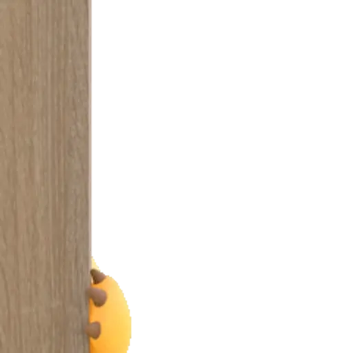
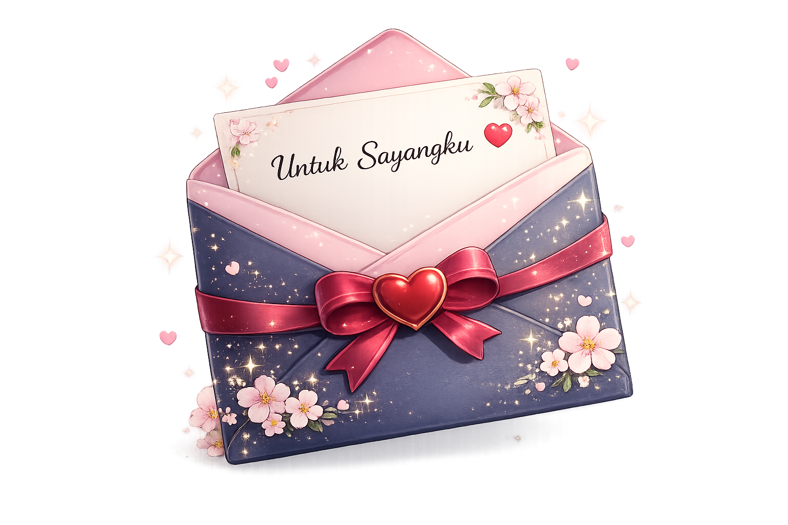

Aku tau akhir-akhir ini aku banyak bikin hati kecil kamu sedih. Aku cuma minta waktu sebentar buat baca ini.

Aku sadar mungkin aku terlalu sering bikin kamu kecewa. Aku ga akan membela diri. Aku cuma mau ngaku kalau aku memang salah.
Aku tahu kata maaf ga langsung menghilangkan rasa kecewa. Tapi aku benar-benar ingin berubah.
maafin aku ya sayangku, aku tau aku salah, aku tau udah bikin kamu kecewa akhir-akhir ini. maafin semua perlakuanku ya sayangg, semoga kamu masih tetep sayang dan cinta sama aku..
maaf juga kalo aku udah ngediemin kamu tanpa kabar 3 hari ini. maaf ya sayang kalo aku egois, aku bener-bener jahat ke kamu sayang. semoga kamu bisa maafin aku ya sayang. ayok kita baikan lagi ya sayangku, kita jalani hari-hari seperti biasa lagii sayangg. aku akan berusaha lebih lebih lebih baik lagi kok sayang. semoga kamu tetep sabar ngehadepin aku yang kekanakan-kanakan ini ya sayangku hehe.
dan semangat ya sayang, kurang 60 hari lagi kan kita udah serumah. semoga kita bisa ngelewati cobaan-cobaan yang nyebelin ini ya sayangkuu. semoga kita bisa sampai di titik bahagia itu yang selalu kita nanti-nantikan sayang.
aku berharap ini jadi terakhir kalinya kita berantem, dan aku akan belajar buat lebih bisa ngontrol emosi ini sayangg. kamu juga gitu ya sayangku. semoga kita bisa jadi pasangan dan keluarga yang bahagia nanti, aamiin 🤍
udahan ya sayangku, marahnya nggak boleh lama-lama, udah nggak boleh cuek lagii. aku janji ke kamu bakal lebih baik lagi nyikapin masalah, sayang. dan kamu jangan sedih lagi ya sayang, semangat kerja e, dan jangan lupa maem yang banyak. cowok gak boleh diet atu hehe 🤏🏻🤍
semoga dengan ini kamu kembali tersenyum lagi dan nggak marah lagi ke aku. luvv uu more sayangkuu, cintakuu 🤍✨🌈
Terima kasih sudah membaca semuanya. Semoga setelah ini kita bisa sama-sama memperbaiki semuanya.❤️